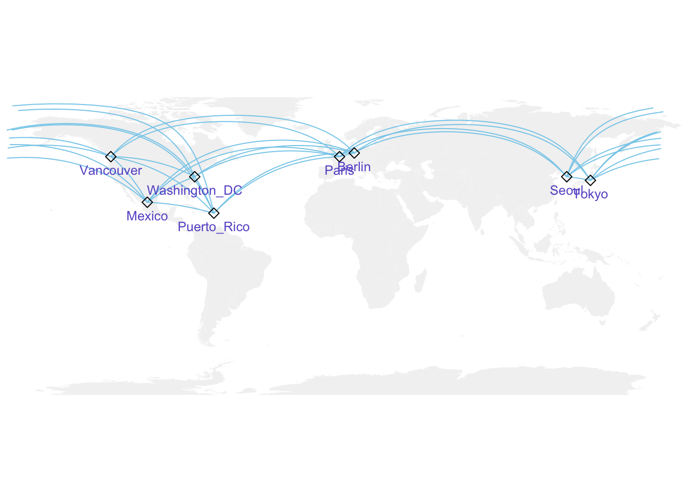
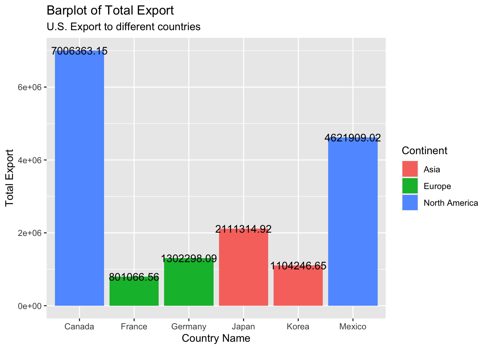

Chapter 4 Analysis and Results
4.1 The development process of U.S. export data from 1999 to 2021
4.1.1 Overall data of U.S. export of goods and services
In this part, we want to analyse the development process of U.S. export data.
Firstly, we want to see the trend of the U.S. export data on a general level, so we combine three data sets of overall export data of goods and exports to see such trend.
From the picture we can see that:
Data on exports in general have been on an upward trend in both services and goods, with the exception of a few few years.
We speculate that the fall around 2001 and 2008 may be due to the global financial crisis, and the fall around 2020 may be due to the changes of trade policy towards China and the COVID-19.
4.1.2 Analysis of General merchandise in the exports of U.S.
General merchandise can be said to be the most important part of goods. It is closely related to people’s livelihood. Our research on general merchandise can reflect the living standard and quality of the American people to a certain extent.
Firstly we want to see the trend of exports of general merchandise and the proportion of general merchandise in goods.
Now we want to analysis the trend of the data of different types of general merchandise, and we also want see the relationships between them.
As we can see from the plot:
(a) The trends of data changes for almost all types general merchandise are the same;
(b) The industrial supplies and materials and capital are greatly affected by the economic situation in the world;
(c) The type of food, feeds and beverages is less affected by world economic fluctuations.
(d) The relationships between those types of merchandise seem to be all positive.
We can also use the index to compare the trends of the data among different types of general merchandise. This method is considered more fairly.

From this plot we can conclude that:
(a) The data of industrial supplies and materials had the most dramatic changes in the past two decades;
(b) Except for type of food, feeds and beverages, all other types of data suffered huge declines around 2020.
4.2 Analyze the data of export cooperation between the United States and different countries
4.2.1 Try to draw out the global map

Using this graph, we can easily visualize the capitals or representative cities of different areas or countries. Then, drawing out the export lines between cities to illustrate the varied export directions.
4.2.2 Try to make graphs based on transformed data - Islands and areas within the United States
- In a horizontal comparison analysis, at the same time point, the States tends to have much larger export volume to Puerto Rico than that of the other US Virgin Islands.
- In a vertical comparison analysis, as time goes by, export volume to Puerto Rico is supposed to more volatile than that of the other US Virgin Islands.
- Generally speaking, from the old time - time before 2000 - to the present time - time after 2020, exports to Puerto Rico have absolutely increased a lot. However, except some outliers, exports to the other US Virgin Islands tend to remain the same over this whole time period.
1. Corresponding with the aforementioned total trend of exports to Puerto Rico and US Virgin Island, the separate manufacture exports and non-manufacture exports are likely to have similar changing pattern.
2. Manufacture exports to Puerto Rico have the largest volume, compared to manufacture exports to US Virgin Islands and the other two non-manufacture exports to these two areas.
4.2.3 Try to compare US export data to different countries - using corrplot and barplot

- Correlation plot or correlation matrix can easily reveals that all of the US exports to Canada, Mexico, France, Germany, Japan and Korea are supposed to be positively related.
- It is pretty common that exports to the countries in the same continent tend to be more positively related - this means that US government may have some similar or even the same export and cooperation policies regarding to the areas within the same continent.
- US exports to Canada seems to be an influential factor to the exports to other countries - this means that the import and export cooperation model between the United States and Canada will affect the degree of cooperation between the United States and other countries to a certain extent.

- US exports to Canada tend to have the largest volume, which means that, among these six countries in three different continents, the U.S. pays the most attention to cooperation with Canada.
- U.S. exports more to Asia than Europe, which does make sense, since instead of establishing profound cooperation relationships with single countries, U.S. usually cooperate with the NATO or the E.U..
4.3 The data of U.S. exports to China and imports from China
First we want to see the overall trend of the data of U.S. exports to China and imports from China
After visualizing the data and plot the smooth line, we can see that:
(a) The data of exports to China and imports from China are both upward trends generally;
(b) After entering the 21st century, growth is particularly rapid, especially for imports;
(c) Around 2020, there was a brief and significant decline in the data, but it quickly rebounded to a higher level than before and this should be affected by the Sino-US trade war;
(d) The import value of Chinese goods is much higher than the export value, which means that US trade is inseparable from China.
And also we can see the relationship between the data of exports to China and imports from China.
From this correlation plot we can easily see that the data of exports to China is highly positively correlated with the data of imports from China, which matches the result we found in the previous plot.